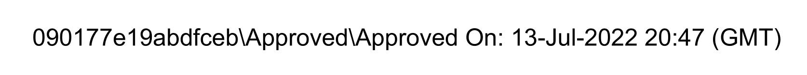
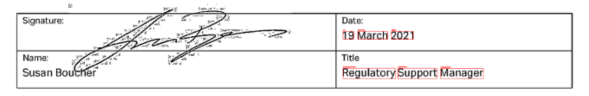

In this task, you'll work with Page 2 of a pharmaceutical Supporting Documentation File (SDF) to extract critical information. Page 2 is an Animal Origin Statement: a one-page scanned letter from the supplier about whether the materials in one of its products come from animals.
Download it to your computer with the download arrow at the top right. Then find these fields on it by eye:
Your code will look for each of these on the next slides.
If you don't understand anything, I think you should use Claude. Here are two sample prompts:
{{PROMPT:I'm learning to read a scanned PDF with Tesseract OCR in Google Colab. My task says: [paste the slide's instruction]. Explain in simple words what I need to do and give me one hint, but don't write the code for me.}} {{PROMPT:Here's my code and the error I got: [paste both]. Explain in plain English what's going wrong and give me one hint, but don't fix it for me.}}Open your copy of the notebook from the Tesseract reading, the one you saved to your Drive. You'll run the same cells again, this time on Page 2.
Each code cell starts with a gray comment that names it, such as "STEP 3: Upload Your Pharmaceutical SDF". These slides name the cells by that STEP number.
First, delete the cells you added yourself in Try It Yourself. They work on Page 4, and your Task notebook has to run from top to bottom on Page 2.
# Remove excessive newlines# Remove unwanted symbols# Extract Gamma Process Run ID# Extract bounding box data# Convert image to OpenCV BGR# Define key fields to highlight# Initialize an empty dictionary# Rotate 90 degrees clockwise (if you did the Bonus)Now run the first cells on Page 2:
pharmaceutical-sdf-page2-animal-origin.pdf, the file you just downloaded.You did this in the Tesseract reading, on Page 4.
{{SHOT:task-s01-upload}}That's under STEP 3. Under STEP 4, you'll see [EMPTY] - No text found! Page 2 holds only a picture of text, so you need OCR (reading text from a picture).
Improve OCR accuracy using image pre-processing techniques like thresholding, noise reduction, and rotation correction. Start with the first two.
Run the 4 cells from STEP 6 to STEP 9, in order:
You did these in the Tesseract reading.
{{SHOT:task-p2-cleaned-top}}That's the top of the cleaned page STEP 9 shows. Above it, STEP 9 prints the new size: 5100x6600 pixels, twice as wide and twice as tall as before.
Rotation correction turns a sideways page upright before OCR. Page 2 is already upright, so it needs no rotation.
Only one thing on it is sideways: the approval stamp on the left edge, printed from bottom to top. Here it is, turned so you can read it:

This step is optional. To read the stamp with code, run the BONUS STEP cell, which makes rotate_image(). Then, in a new code cell, turn the picture 90 degrees clockwise and keep it under a new name, rotated_gray, as that cell's own example shows. Run Tesseract on rotated_gray, as in the STEP 10 cell, and look for the "Approved On" line. Do this after you run STEP 10 on the next slide, because the STEP 10 cell makes custom_config, the setting your new cell copies from it.
What you'll see in Colab: among the lines Tesseract prints, this one.
090177e19abdfceb\Approved\Approved OnTurned upright, Tesseract reads the stamp's code right. On the next slide, you'll see that STEP 10 reads the stamp even without turning, date included, with one stray / in the code.
Keep using gray, the upright picture, for the rest of the task.
Now apply Tesseract OCR to extract text from the scanned pharmaceutical document. Run the STEP 10 cell. Tesseract reads your cleaned picture and prints every piece of text it finds.
You did this in the Tesseract reading.
{{SHOT:task-s03-out}}Colab cuts the longest lines off at the right edge. Some words come out wrong, such as Wey for Way in the address. You'll fix what you can on the next slide.
Clean the OCR output to fix formatting issues and correct common OCR misreads. Run the STEP 11 cell. It puts all the text on one line with single spaces, and fixes misreads like L0T (with a zero) with re.sub(), which finds a piece of text and replaces it.
Then read the cleaned text next to Page 2. If you spot a word Tesseract misread, add one more re.sub() line for it in that cell, in the same shape as the others, and run the cell again.
You did this in the Tesseract reading.
What you'll see in Colab: all of Page 2's text on one long line.
==================================================
CLEANED OCR TEXT
==================================================
09017/7e19abdfcebApprovedApproved On: 13-Jul-2022 20:47 (GMT) 2) cytiva 100 Results Wey Marlborough, MA 01752 USA Animal Origin Statement Regarding: Animal origin statement for AKTA Ready Products It is hereby stated that the materials in the fluid path of the products listed below are animal origin free or comply with EMA 410/01 Rev 3. Product/Partiname) Product.code High Flow Gradient C, Modified, AKTA ready 29-1846-12 Cytiva appreciates the opportunity to serve our valued customers and is dedicated to improving our capabilities to manufacture and deliver products and services that meet or exceed your needs consistently. Signature: Ae da Date: 19 March 2021 Title Regulatory Support Manager The information herein is provided to the best of our knowledge and belief, based on the information we have been given and the information available to us at the time that this document was issued. The information may change as additional facts come to light, or as the circumstances warrant. Your use hereof is hence at your own risk and does not relieve you of your own responsibility for checking the suitability of our products for your intended use. Page 1/1 DOC1098513/Rev9 cytiva.comOne misread you could fix this way: Page 2 says 100 Results Way, and Tesseract reads 100 Results Wey.
Next, find where each word sits. Run the STEP 12 and STEP 13 cells.
You did this in the Tesseract reading.
{{SHOT:task-p2-wordboxes-top}}That's the top of the page STEP 13 shows, with a green box on each word. Above it, STEP 12 prints the first 10 words it found, each with its position, size and confidence, then how many words it found in all.
Use bounding boxes to identify and localize key information, such as:
Go to the STEP 14 cell. Its key_fields list still holds Page 4's words, such as CERTIFICATE, LOT and STERIS, not Page 2's. Change the list to words from these fields, as Tesseract printed them on slide 7. Write each word in capital letters, one word per item, because the cell checks one word at a time in capitals. Then press Run.
You did this in the Tesseract reading, with Page 4's words.
{{SHOT:task-s06-top}}With 18 words such as CYTIVA and 29-1846-12, the cell found 22 matches (ANIMAL appears 3 times). SUSAN and BOUCHER got no box: slide 12 says why.
Structure your output as JSON with:
Now press Run on the STEP 15 cell. It has no word list of its own: it uses the key_fields list you just changed in STEP 14, so it now saves Page 2's words, each with its box and confidence.
You did this in the Tesseract reading.
{{SHOT:task-s07-top}}That's the start. It goes on the same way for each word in your list that Tesseract found: 16 words with the 18-word list from the last slide. A word that appears more than once, like ANIMAL, gets one entry, with the box of its last place on the page.
Code can be wrong without an error, so check what it found against Page 2. Here's what the page really says:
Tesseract reads most of these right. Two it doesn't:
AKTA: Tesseract drops the two dots over the Ä.
So in your check, mark the name as missed by Tesseract and read it from Page 2 by eye. Add a text cell at the bottom of your notebook (+ Text) that says so, for example: Signer name: missed by Tesseract; on the page it reads Susan Boucher.
Pro Tip: There's no perfect OCR output. Focus on doing your best to clean, extract, and structure key information. Even if it's not perfect, show your logic clearly: that's what really matters.
Before you hand in your notebook, check that it shows these things for Page 2:
Then share it, so your Program Manager can open it:
You'll paste this link into the form at the end of this task. To check it works, open it in a private browser window: it should open without asking for access.
Before you answer the form, take a few minutes to step back and think about two of its questions:
Look back at slide 12: the fields Tesseract misread are a good place to start. You'll answer both at the end of this task.